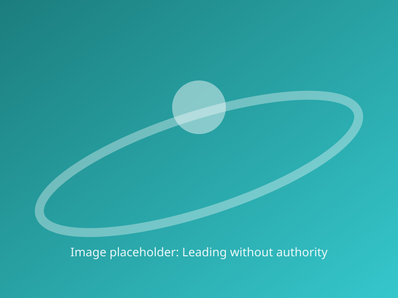
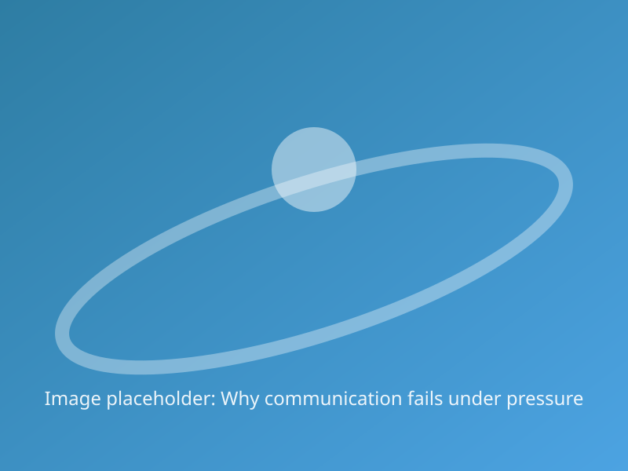
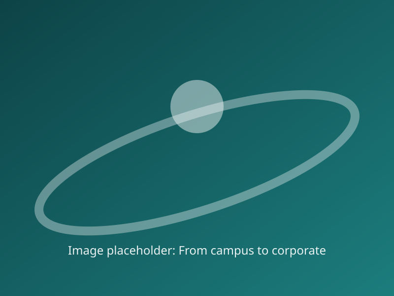
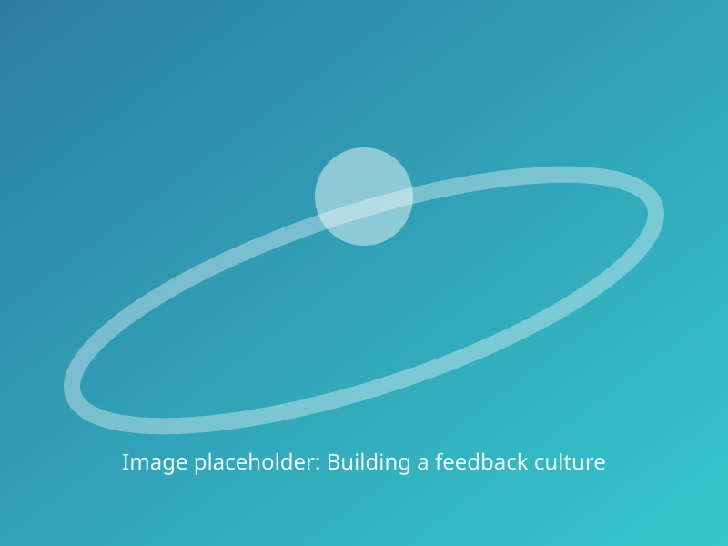
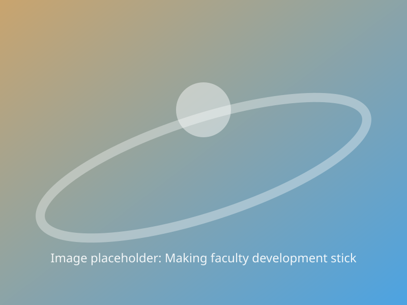
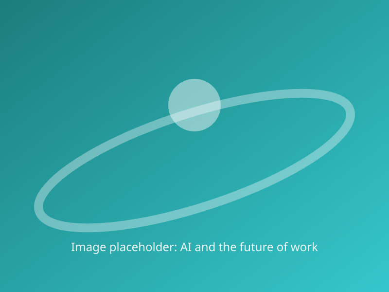

Leading without authority
How leaders influence people when the title is not enough.
Enquire on WhatsAppExplore thought leadership, industry perspectives and practical insights shaping the future of learning, leadership and growth.
Let's Start a ConversationGrowth becomes transformational when learning translates into action. Dr. Urmi Roychoudhury shares what that looks like in classrooms and workplaces.

How leaders influence people when the title is not enough.
Enquire on WhatsApp
Practical habits for difficult conversations at work.
Enquire on WhatsApp


Moving teaching methods from workshop to classroom.
Enquire on WhatsApp
Start a conversation with Dr. Urmi and the Innerello team.